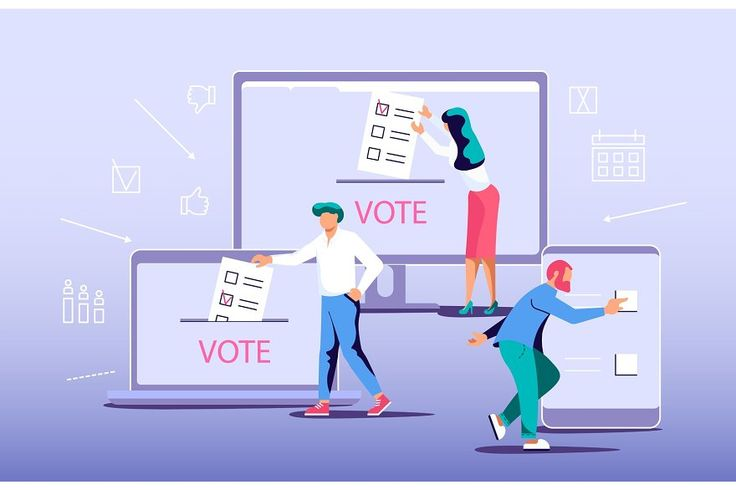

About Machinova
Building Trust in Democratic Processes
SOC 2 Certified
50+ Countries
ISO 27001
Building Trust in Democratic Processes
Machinova started in 2019 when a group of election observers noticed the same problems everywhere: long queues, disputed results, and voters who couldn't participate because they were too far away or had mobility challenges. We built this platform to fix those problems.
Today, we work with universities, corporations, NGOs, and government agencies across 50 countries. Our system has processed over 2.5 million votes in more than 500 elections. We're not trying to replace traditional voting entirely—we're just making it possible for more people to participate securely when in-person voting isn't practical.

We provide secure digital voting infrastructure for organizations that need to run elections. Our platform handles everything from voter registration and authentication to ballot casting and result tabulation. Here's what that means in practice:
We use the same encryption standards as banks (AES-256) and maintain SOC 2 Type II certification. Every vote is encrypted, every action is logged, and the system is audited quarterly by independent security firms.
We've run elections for organizations with 50 voters and organizations with 500,000 voters. We've handled contested elections, recounts, and observer access. We know what can go wrong and we've built systems to prevent it.
Elections don't happen on a 9-to-5 schedule. Our support team is available 24/7 during your election period. We'll train your staff, help voters who get stuck, and make sure everything runs smoothly.
We meet GDPR requirements, follow ISO 27001 standards, and work with legal teams to ensure compliance with local election laws. We maintain documentation for auditors and can provide observer access during elections.
Real numbers from real elections across the globe

Elections Conducted
Votes Cast Securely
Countries Served
Client Satisfaction Rate
Our platform is built on three core components that work together to ensure secure, transparent elections:
Votes are encrypted using AES-256 before transmission. Once cast, they're recorded on a distributed ledger that can't be altered. This means you can verify votes were counted correctly without compromising voter privacy.
We support multiple authentication methods: email verification, SMS codes, biometric options, or integration with your existing ID systems. You choose what makes sense for your election's security requirements.
Voters can participate from any device—phone, tablet, or computer. The interface adapts to screen size and works with assistive technologies for voters with disabilities.
Election administrators see real-time turnout data and can monitor system health. Results are tabulated instantly when polls close, with full audit logs available for review.
A significant portion of our work involves supporting civil society organizations, election monitoring groups, and democratic development programs. We understand budget constraints and the need for transparency in these contexts.
Every election is different. Schedule a call to discuss your specific requirements, timeline, and budget.